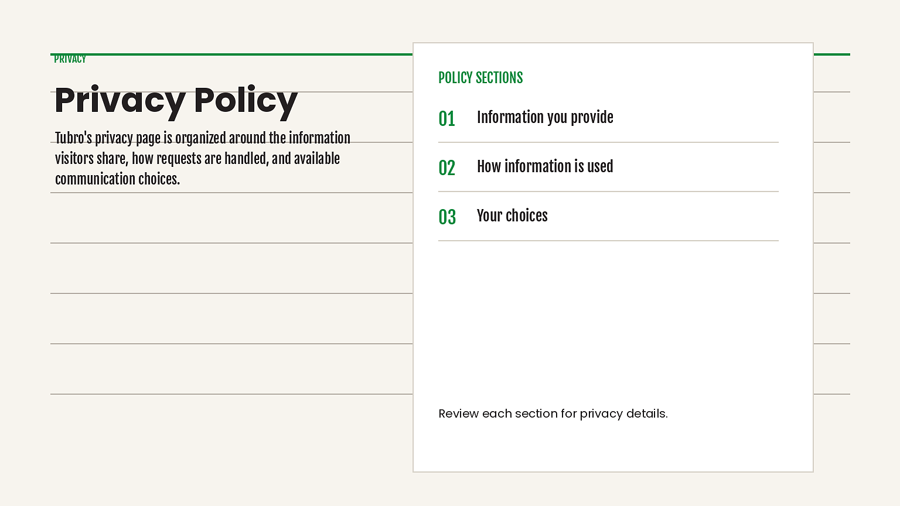

1 CODE region and 0 raster assets to review: 0 extract, 0 inpaint.

Build the quiet policy/editorial document composition with responsive CSS grid/flex containers, live semantic HTML typography, #0C883D borders and pseudo-elements for the measured ledger rule; preserve the approved section spacing and mobile stacking without rasterizing text or UI.
# Privacy Policy | Tubro Construction decomposition notes Manifest wins for content. Section refs win for visual language. Page flow wins for transitions. The composition map identifies load-bearing relationships. The extraction plan and NOTES determine image ownership and implementation layers. Generic components provide mechanics only and may not replace a section's composition. ## 01-policy-content - Owner: `policy-editorial-document`. Build the quiet policy/editorial document composition with responsive CSS grid/flex containers, live semantic HTML typography, #0C883D borders and pseudo-elements for the measured ledger rule; preserve the approved section spacing and mobile stacking without rasterizing text or UI. - Raster count: 0; use exact section-owned files with CSS object-fit and approved crop contracts.
{kind=link}